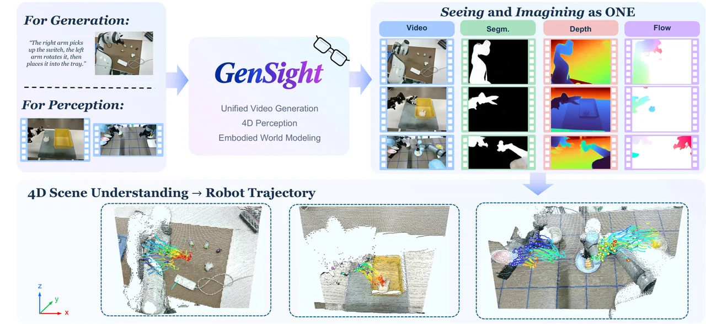

GENSIGHT / 202601 UNIFIED EMBODIED WORLD MODEL
GenSight
Seeing and Imagining as One
A unified world model bringing video generation and dense 4D perception into a single pretrained video diffusion transformer. RGB video, depth, embodiment segmentation, and first-frame-relative optical flow share a common representation, backbone, and velocity-prediction space.
The same model supports future video generation with aligned dense predictions and single-step perception from observed videos.